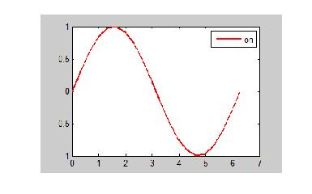

Contents
function sqlite_test_bind
clear all
close all
clc
dummy = mksqlite('version mex');
fprintf( '\n\n' );
mksqlite Version 2.2 build: 109, ein MATLAB Interface zu SQLite
(c) 2008-2016 by Martin Kortmann <mail@kortmann.de>
Andreas Martin <andimartin@users.sourceforge.net>
basierend auf SQLite Version 3.10.2 - http://www.sqlite.org
mksqlite verwendet darueber hinaus:
- DEELX perl kompatible regex engine Version 1.3 (Sswater@gmail.com)
- BLOSC/LZ4 1.3.0-rc3.dev zur Datenkompression (Francesc Alted / Yann Collett)
- MD5 Message-Digest Algorithm (RFC 1321) Implementierung von Alexander Peslyak
Platform: PCWIN64, little endian
Create a database with some records
fprintf( 'Creating in-memory database...\n' );
mksqlite( 'open', ':memory:' );
mydata = { ...
'Gunther', 'Meyer', 'Munich', []; ...
'Holger', 'Michelmann', 'Garbsen', rand( 1, 10 ); ...
'Knuth', 'Almeroth', 'Wehnsen', 'coworker' ...
};
mksqlite( 'CREATE TABLE demo (Col_1, Col_2, Col_3, Data)' );
for i = 1:size( mydata, 1 )
mksqlite( 'INSERT INTO demo VALUES (?,?,?,?)', mydata{i,:} );
end
Creating in-memory database...
Take a screenshot (figure) as RGB-matrix...
h = figure;
set( h, 'units', 'normalized', 'position', [0.5,0.5,0.2,0.2] );
x = linspace( 0, 2*pi, 20 );
plot( x, sin(x), 'r-', 'linewidth', 2 );
legend on
F = getframe(h);
delete(h);
data = F.cdata;
mksqlite( 'INSERT INTO demo VALUES (?,?,?,?)', ...
size( data, 1 ), size( data, 2 ), size( data, 3 ), data );
Read back all records
fprintf( 'Restore BLOB records...\n\n' )
query = mksqlite( 'SELECT * FROM demo' );
fprintf( '---> Empty array: ' ), ...
query(1).Data
fprintf( '---> 10 random numbers between 0 and 1: ' ), ...
typecast( query(2).Data, 'double' )
fprintf( '---> Text: ' ), ...
cast( query(3).Data, 'char' )
fprintf( '---> Image: (see figure) \n\n' )
img = reshape( query(4).Data, query(4).Col_1, query(4).Col_2, query(4).Col_3 );
h = image( img );
axis off
set( gcf, 'units', 'normalized', 'position', [0.5,0.5,0.2,0.2] );
drawnow
try
warning( 'off', 'MATLAB:HandleGraphics:ObsoletedProperty:JavaFrame' );
jh = get( h, 'JavaFrame' );
jh.fFigureClient.getWindow.setAlwaysOnTop( true );
jh.fFigureClient.getWindow.setVisible( true );
catch
end
mksqlite( 'close' );
Restore BLOB records...
---> Empty array:
ans =
[]
---> 10 random numbers between 0 and 1:
ans =
0.192536187802256
0.190031548151377
0.841315265924517
0.103525881042305
0.846405562204329
0.196486559592500
0.883888791365866
0.020917176371716
0.049953303019211
0.268031019298321
---> Text:
ans =
coworker
---> Image: (see figure)
